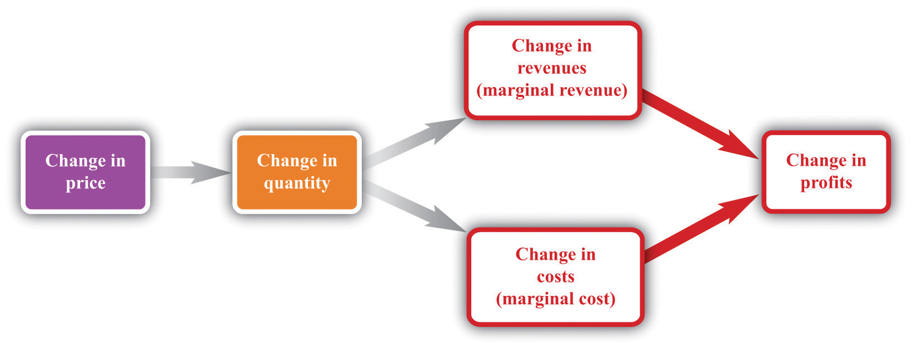
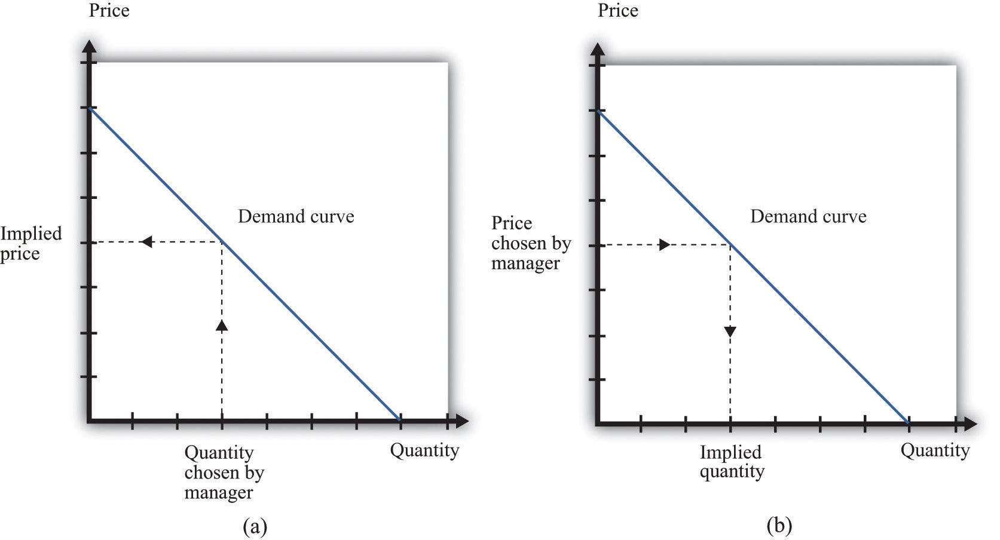
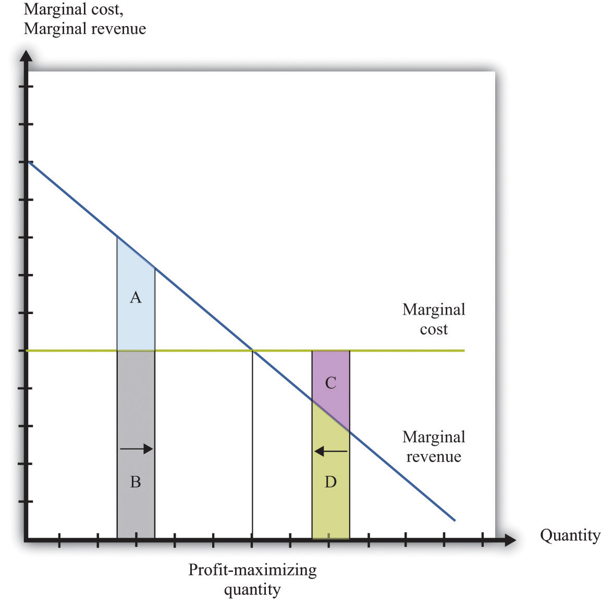
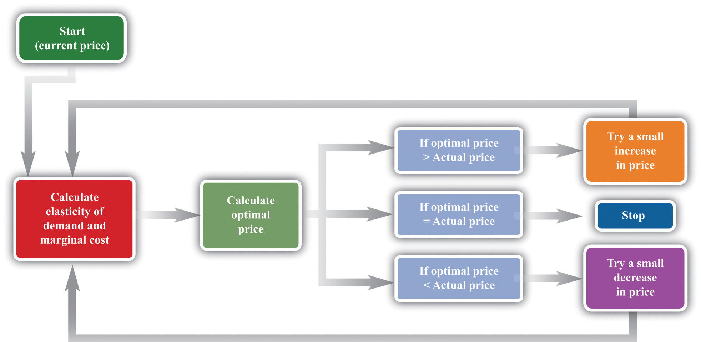

Let us review the ideas we have developed in this chapter. We know that changes in output lead to changes in both revenues and costs. Changes in revenues and costs lead to changes in profits (see Figure 7.16 "Changes in Revenues and Costs Lead to Changes in Profits"). We have a measure of how much revenues change if output is increased—called marginal revenue, which you can calculate if you know price and the elasticity of demand. We also have a measure of how much costs change if output is increased—this is called marginal cost. Given information on current marginal revenue and marginal cost, a marketing manager can then decide if a firm should change its price. In this section, we derive a rule that tells us how a manager should make this decision.
Figure 7.16 Changes in Revenues and Costs Lead to Changes in Profits
When a firm changes its price, this leads to changes in revenues and costs. The change in a firm’s profit is equal to the change in revenue minus the change in cost—that is, the change in profit is marginal revenue minus marginal cost. When marginal revenue equals marginal cost, the change in profit is zero, so a firm is at the top of the profit hill.
In the real world of business, firms almost always choose the price they set rather than the quantity they produce. Yet the pricing decision is easier to analyze if we think about it the other way round: a firm choosing what quantity to produce and then accepting the price implied by the demand curve. This is just a matter of convenience: a firm chooses a point on the demand curve, and it doesn’t matter if we think about it choosing the price and accepting the implied quantity or choosing the quantity and accepting the implied price (Figure 7.17 "Setting the Price or Setting the Quantity").
Figure 7.17 Setting the Price or Setting the Quantity
It doesn’t matter if we think about choosing the price and accepting the implied quantity or choosing the quantity and accepting the implied price
Suppose that a marketing manager has estimated the elasticity of demand, looked at the current price, and used the marginal revenue formula to discover that the marginal revenue is $5. This means that if the firm increases output by one unit, its revenues will increase by $5. The marketing manager has also spoken to her counterpart in operations, who has told her that the marginal cost is $3. This means it would cost an additional $3 to produce one more unit. From these two pieces of information, the marketing manager knows that an increase in output would be a good idea. An increase in output leads to a bigger increase in revenues than in costs. As a result, it leads to an increase in profits: specifically, profits will increase by $2. This tells the marketing manager that it is a good idea to increase output. From the law of demand, she should think about decreasing the price.
Figure 7.18 Optimal Pricing
To the left of the point marked “profit-maximizing quantity,” marginal revenue exceeds marginal cost so increasing output is a good idea. The opposite is true to the right of that point.
Figure 7.18 "Optimal Pricing" shows this idea graphically. To the left of the point marked “profit-maximizing quantity,” marginal revenue exceeds marginal cost. Suppose a firm is producing below this level. If it increases its output, the extra revenue it obtains will exceed the extra cost. We see that an increase in output yields extra revenue equal to the areas A + B and extra costs equal to B. The increase in output yields extra profit, which is equal to A. Increasing its output is thus a good idea. Conversely, to the right of the profit-maximizing point, marginal revenue is less than marginal cost. If a firm reduces its output, the decrease in costs (C + D) exceeds the decrease in revenue (D). Decreases in output lead to increases in profit.
Profits are greatest when
marginal revenue = marginal cost.This is the point where a change in price leads to no change in profits, so we are at the very top of the profit hill that we drew in Figure 7.3 "The Profits of a Firm". See also Figure 7.17 "Setting the Price or Setting the Quantity".
Think about Ellie’s company. If it became more expensive for the company to produce each pill, it seems likely they would respond by raising their costs. Also, we said earlier that their customers are not very sensitive to changes in the price, which should allow them to set a relatively high price. In other words, the profit-maximizing price is related to the elasticity of demand and to marginal cost. These are the two critical ingredients of the pricing decision.
Toolkit: Section 31.15 "Pricing with Market Power"
Firms should set the price as a markup over marginal cost:This expression comes from combining the formula for marginal revenue and the condition that marginal revenue equals marginal cost. See the toolkit for more details.
and
There are three facts about markupThe percentage amount by which price exceeds marginal cost.:
Ellie’s team looked at their numbers. At the current price, −(elasticity of demand) = 1.47. They learned that the marginal cost was $0.28 per pill, and they were charging $0.50 per pill. Their current markup, in other words, was about 79 percent: 0.5 = (1+ 0.79) × 0.28. But if they applied the markup pricing formula based on the current elasticity of demand, they could charge a markup of 1/0.47 = 2.12—that is, more than a 200 percent markup, leading to a price of $0.87. It was clear that they could do better by increasing their price
To summarize, a manager needs two key pieces of information when determining price:
Given these two pieces of information, a manager can then use the markup formula to determine the optimal price. Be careful, though. The markup formula looks deceptively simple, as if it can be used in a “plug-and-play” manner—given marginal cost and the elasticity of demand, plug them into the formula and calculate the optimum price. But if you change the price, both marginal cost and the elasticity of demand are also likely to change. A more reliable way of using this formula is in the algorithm shown in Figure 7.19 "A Pricing Algorithm", which is based on our earlier idea that you should find your way to the top of the profit hill. The five steps are as follows:
Figure 7.19 A Pricing Algorithm
This pricing algorithm shows how to get the best price for a product.
Ellie’s team members were aware that, even though demand for the drug was apparently not very sensitive to price, they should not immediately jump to a much higher markup. They had found that based on current marginal cost and elasticity, the price could be raised. But as they raised the price, they knew that the elasticity of demand would probably also change. Looking more closely at their market research data, they found that at a price of $0.56 (a 100 percent markup), the elasticity of demand would increase to about 2. An elasticity of 2 means that the markup should be 100 percent to maximize profits. Thus—at least if their market research data were reliable—they knew that a price of $0.56 would maximize profits. Ellie recommended to senior management that the price of the drug be raised by slightly over 10 percent, from $0.50 per pill to $0.56 per pill.
So far we have looked only at movements along the demand curve—that is, we have looked at how changes in price lead to changes in the quantity that customers will buy. Firms also need to understand what factors might cause their demand curve to shift. Among the most important are the following:
If the demand curve shifts, should a firm change its price? The answer is yes if the shift in the demand curve also leads to a change in the elasticity of demand. In practice, this is likely to be the case, although it is certainly possible for a demand curve to shift without a change in the elasticity of demand. The correct response to a shift in the demand curve is to reestimate the elasticity of demand and then decide if a change in price is appropriate.
Pricing is a difficult and delicate job, and there are many factors that we have not yet considered:We address some of them in other chapters of the book; others are topics for more advanced classes in economics and business strategy.